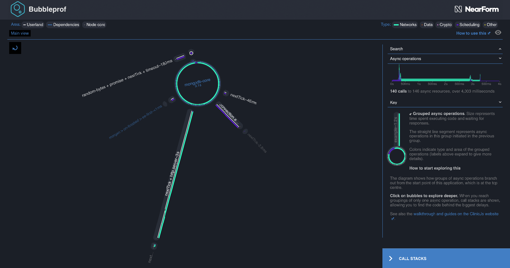
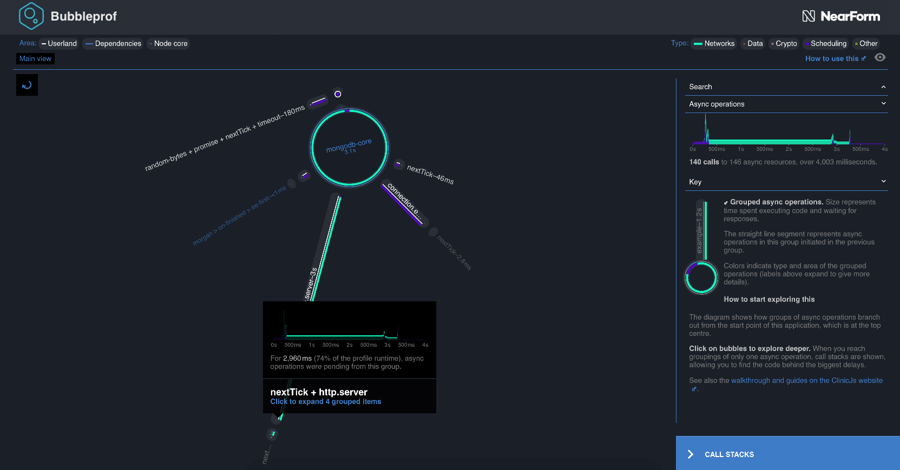
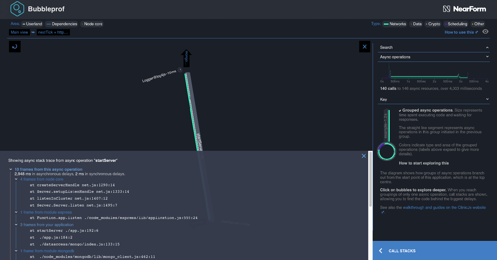
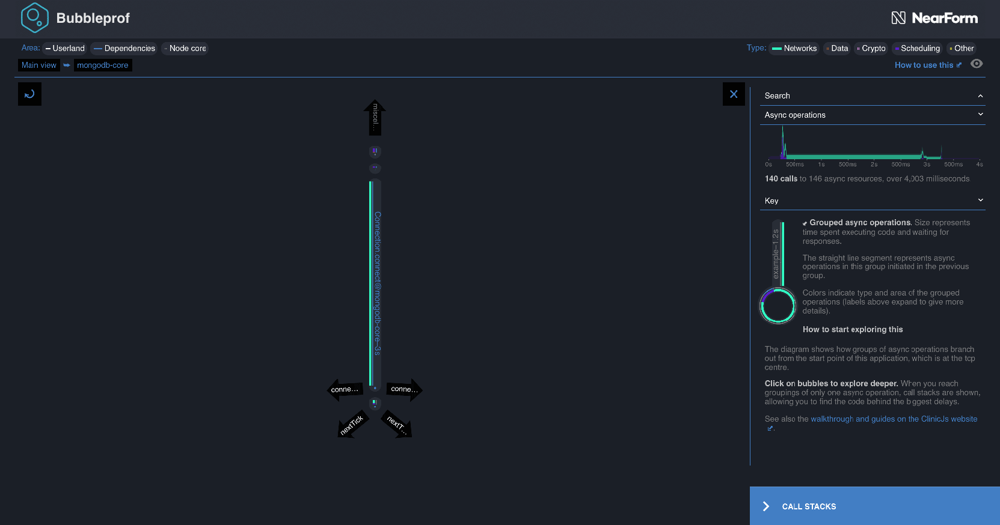
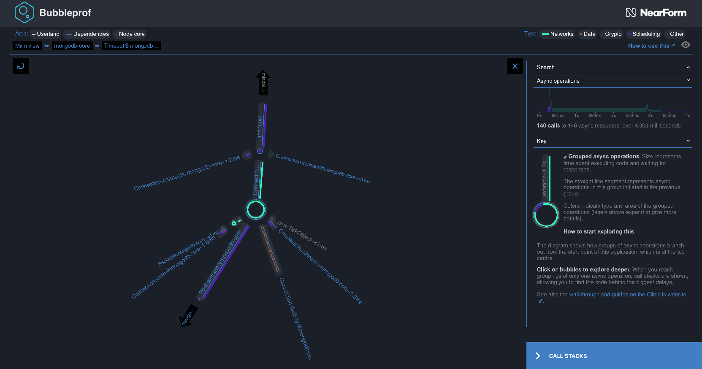

介绍Bubbleprof —— 一种新颖的Node.js异步分析方法
Since the beginning of Node, profiling asynchronous operations has been a big hurdle. After months of internal research we have finally found a solution which greatly simplifies the process of finding async bottlenecks in Node applications. Today, we are glad to announce the first public version of Clinic.js Bubbleprof. Bubbleprof allows developers to capture all async activity with minimum effort. It then uses a novel "bubble" approach to visualize this activity. Everything you need is in one HTML file.
You can find it included in the Clinic.js bundle:
Try it out by cloning our basic Bubbleprof examples from Github:
Start simple and run the basic-latency example, which visualizes how a latency
of 1s affects your server:
Notice the long lines of latency? That’s a quick way of finding something to improve in the app.
Traditional Async Profiling¶
Node works best in heavily-I/O-related contexts, and often acts as a mediator between many data streams and interfaces. Due to JavaScript’s evented nature, most I/O is performed asynchronously – especially when our Node process is a networked application. If we can measure asynchronous activity in a decoupled way, we can find out where an application is waiting. Finding out where an application is waiting means finding out where to optimise our asynchronous flow. The end result being that our application becomes faster, and our users happier.
Tracking and profiling asynchronous is a tricky issue. Consider the following simple example:
Running the above program will (probably) crash our Node.js process with a stack like this:
Figuring out which one of the setTimeouts triggered the crash is a
surprisingly hard problem. The stack trace only contains the last synchronous
part of our application. If we want to not just figure out what crashed the
program but also profile how many times the async function is called and from
where we would run into similar problems.
This is not a new problem in Node.js, but in fact one that’s been around since the very beginning. Lots of solutions have been attempted for making the situation better in regards to capturing longer stack traces and measure runtime of functions. Most older solutions did things like rewrite all your code that does something async to capture a stack trace before and then combine them back to produce a “full” trace. This requires plenty of “monkey patching” and is known for being brittle and have a substantial negative performance effect - it would often de-optimise your code because of too much reflection.
Enter node core instrumentation¶
Luckily the Node.js core collaborators have been trying hard to make the
diagnostic situation better for everyone by adding more instrumentation to the
Node.js core codebase. In fact, all async code (excluding native modules) is
actually triggered from Node.js core which means that the situation has to
improve there for userland to get any benefit. Some of the new instrumentation
that has landed recently is the new async_hooks core module. async_hooks is
an interface to a new set of instrumentation in core that instruments any async
operation. This means that we now have a way to hook into when something async
happens and also a way to find out what the parent async operation was. This
is a massive improvement in the profiling landscape as it means we can now get a
ton of valuable timing data out of Node.js core without having to resort to a
bunch of hacks.
If we add some async_hooks magic to our previous example, then we can figure
out which of the setTimeouts made our program crash:
Running it will show something similar to this:
Which tells us that this time it was the timeout at line 11 (first one) that triggered the crash.
In addition to letting us capture the async context async_hooks gives us valuable insights into latency stats, throughput, the type of resource, and more.
Reducing complexity¶
async_hooks and other new core instrumentation give us a new waterhose of
profiling data in Node.js. This is essential for doing any kind of profiling but
also poses an interesting challenge. How do we digest this data in a way that
helps us diagnose bottlenecks and/or find errors in our application? This, of
course, is a non-trivial problem and depends on the use-case we are trying to
support.
This is why we’ve started building Bubbleprof, a new command in the Clinic.js toolchain. Bubbleprof uses a series of heuristics and a novel “bubble” based UI to help all kinds of users - from beginners to advanced - to determine where asynchronous time is spent in their application.
Through a series of design workshops we’ve come up with a couple of heuristics we think help group async data together in a way that makes it easy to get an overview over your application.
There are 3 interesting groupings of code in your Node.js application:
- "User code", ie. code you are writing as part of your app.
- "Module code", code running in modules you have installed from npm
- "Node core code", code running in Node.js core.
When code crosses the boundary between one of these groupings, we consider it
important information that can help us group asynchronous operations together.
Bubbleprof tries to collect and aggregate all async operations (using
async_hooks) and then group them into bubbles based on this heuristic.
Visualizing async flow¶
Now that we have a manageable number of groupings - instead of hundreds or thousands of distinct async operations - we can draw a diagram that acts like a map of an application's async flow, showing where time is spent. For example, in this profile based on ACMEair (a dummy flight data application designed for use in benchmarking), we immediately see a flow centered around the database module MongoDB:

Bubbles and links¶
These "bubbles" represent the time spent in synchronous and asynchronous
operations within this grouping. The largest bubble in the view represents calls
from the mongodb-core, which calls other functions elsewhere in the mongodb
code. It dwarves every other bubble, which compared to it are tiny dots, and
much of the application branches off from it. Clearly, optimising how this
application uses mongodb has a lot of potential to reduce overhead and trigger
other async operations earlier. The dominating green colouring in the inner ring
tells us that most of this time is spent on network-related activities, while
the small sliver of purple indicates some time spent in scheduling (ticks,
timeouts and promises). Rolling the mouse over the labels for these colours
gives us information on what they mean and highlights the appropriate parts of
the diagram.
There is also a very long line to a tiny bubble labelled nextTick + http.server. A thin white stripe tells us that this is code from our own
application. Connecting lines like this one represent asynchronous delays from
operations that were called in one grouping (here, the mongodb module), but
execute code in another (here, some of our application's own code which involves
an http server and nextTick wrappers). This suggests another area for us to
focus on: our own code, which might be a quick win.

Drilling down to code¶
We can click into these links and bubbles to see what is going on inside them.
Clicking on the line shows something very simple: startServer is responsible
for almost all of the delay in this grouping. Clicking again brings up the stack
trace; and also - because context here is important - the complete async trace
of the chain of events from our application's initiation to this point.

Because these traces can be very long, we group adjacent frames from the same
section of code, automatically expanding those from the user's own application.
In this example, startServer at line 192 of our app.js called the express
module, which invoked a number of operations in node core, with
createServerHandle being the last one. This was called from the mongodb
client.
Looking at the area chart on the right, we see that this was pending for most of the runtime of our application. Is this a slow server we want to optimise, or a healthy service constantly awaiting requests? We can check our application code and find out.
We can click the upwards-pointing arrow labelled "Mongo..." to navigate up into
that big, mongodb-core bubble. The view inside it also very simple - dominated
by Connection.connect, called from within node_modules/mongodb-core.

Navigating async complexity¶
So what about the parts of our mongodb integration that are fast? If we click
the small topmost grouping, it expands out into another more complex layout.
These tiny, extremely short async operations would have been too small to be
useful information in the previous view, so Bubbleprof has collapsed them
together.

Exploring this view, we see activity mostly relating to database connection pools and sockets. Everything looks fine in terms of speed, and we can use these maps of how processes execute in series and parallel to better understand the module's flow, diagnose timing bugs, spot operations in series that could be more efficient in parrallel, and identify unnecessary steps that can be optimised away.
This is just a simple example. You can use Bubbleprof with benchmarking tools like Autocannon or Wrk to generate robust performance profiles, and see the changes in your application's throughput and flow as you try things out. We have a simple step-by-step walkthrough guide to help you get started.
Get Started¶
We'd love for you to install and try out Bubbleprof to see how it can help get to the bottom of your Node.js performance issues.
Head over to the walkthrough and you'll be up and running in minutes.
We'd also love to get your feedback on Bubbleprof/Doctor/Flame and the outputs they generate. In this early phase of release, we're eager to have it used on as many real-world problems as possible.
We welcome everyone who is interested in becoming part of our community. If you'd like to get involved in any aspect, not just code, first read our Code of Conduct and Contributor guide. Then feel free to reach out to us on GitHub or via the usual social channels.